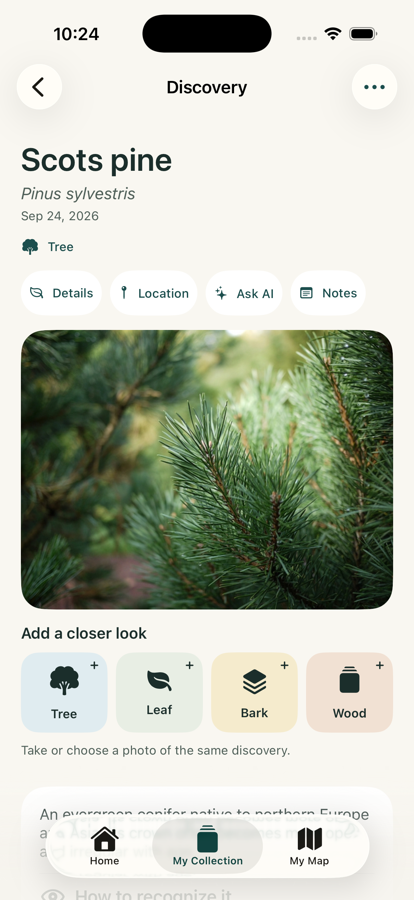
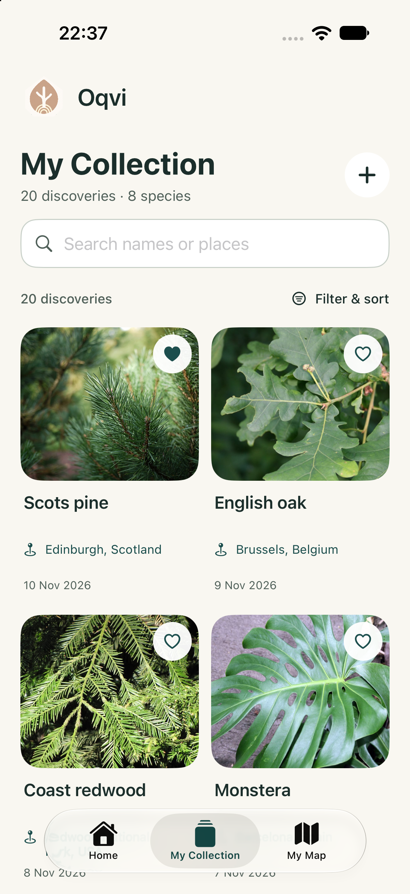
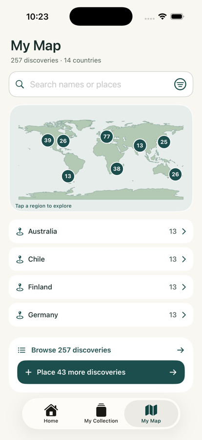

What makes Scots pine bark distinctive?
→AI plant identification · private field collection
Know what
caught your eye.
Identify trees, plants, flowers, bark and wood from a photo. Ask what makes the find distinctive—then keep it somewhere worth returning to.
- First identification free
- No account required
- Saved collection stays on iPhone

Trees✦Leaves✦Flowers✦Bark✦Wood✦Plants
01 / CURIOSITY, KEPT
A name is the beginning.
Not the end of the discovery.
The flower you stopped to admire. The tree outside your window. The timber with a grain you cannot place. Oqvi turns a passing question into a find you can understand, annotate and remember.
02 / LOOK CLOSER
One discovery.
More than one clue.
01
Start with what you see
Photograph the thing that made you stop.
Use a photo from your camera or library. Oqvi can work with a whole tree, leaf, flower, bark, wood grain or cut timber.
TreeLeafFlowerBarkWoodPlant

02
Build the evidence
Add another angle when the detail matters.
A closer leaf, bark texture or cut surface can add clues to the same discovery. Oqvi keeps those views together instead of scattering them across your camera roll.
03 / ASK THE NEXT QUESTION
Learn what to look for next time.
Ask follow-up questions from a discovery: what distinguishes it from a similar species, where it tends to grow, or which detail is worth photographing next.
- Keep useful AI answers with the find
- Review recognition clues and source material
- Return when the same curiosity appears again
Illustrative discovery example
Orange-red upper bark and paired blue-green needles.
02 cluesCapture a close view of the needles and cone.
+04 / YOUR FIELD COLLECTION
Keep the finds you would
otherwise forget.
Save photos, add personal notes, mark favorites and find a discovery again by name, date, type or place.
A searchable home for the details that made each find yours.

“Found beside the old trail after rain.”
Add the context an identification result cannot know for you.

05 / REMEMBER THE PLACE
A private map of what you chose to notice.
Add an optional location and revisit discoveries by region. The populated screen shown here uses sample data; your map grows only from the finds you save and place.
- Optional location access
- Search discoveries or places
- Saved locations stay in app storage on your iPhone
06 / HONEST BY DESIGN
Private collection.
Online identification.
Your saved field record
Saved discoveries, notes and precise map locations live in the app’s local storage on your iPhone.
Photos and AI questions
Identification photos and follow-up questions are processed by online services and require an internet connection.
Location and analytics
You control optional location access, analytics and diagnostics through the available settings and system controls.
07 / USE IDENTIFICATION WISELY
A suggestion for curiosity.
Not professional safety advice.
Photo identifications and AI answers may be incorrect. Never rely on Oqvi for edibility, toxicity, medical decisions, fire safety or structural safety. Confirm important decisions with a qualified expert.
08 / START WITH ONE FIND
Try the first identification.
Keep exploring if it fits.
Your first identification is free. Weekly and yearly auto-renewable subscriptions unlock additional photo identifications and AI questions. Oqvi does not currently include a free subscription trial.
 FREE FIRST IDENTIFICATION
FREE FIRST IDENTIFICATIONStart with something that catches your eye.
Prices and renewal terms are shown before purchase in the App Store and Oqvi purchase screen.
See Oqvi on the App Store ↗︎09 / FIELD QUESTIONS
Before your first discovery.
What can Oqvi identify?+
Oqvi accepts photos of plants, whole trees, leaves, flowers, bark and wood. Results are AI-assisted suggestions and may be incorrect.
Does identification work offline?+
No. Photo identification and AI questions require an internet connection.
Where is my collection stored?+
Your saved collection, notes and precise map locations are stored in the app’s local storage on your iPhone. Identification photos and AI questions are processed online.
Can Oqvi tell me whether something is safe to eat or use?+
No. Do not rely on Oqvi for edibility, toxicity, medical decisions, fire safety or structural safety. Confirm important decisions with a qualified expert.
Is Oqvi a subscription?+
The first identification is free. Weekly and yearly auto-renewable subscriptions unlock additional identifications and AI questions. Check the current purchase screen for localized prices before buying.
THE NEXT FIND IS ALREADY OUT THERE